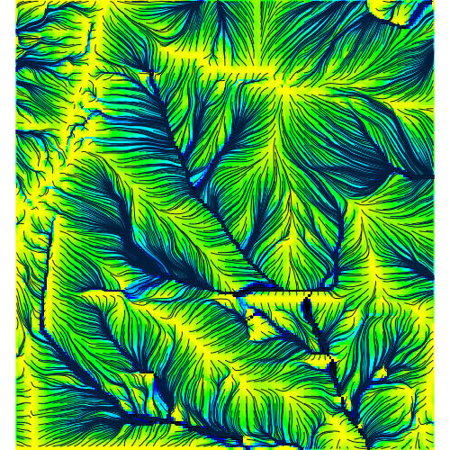
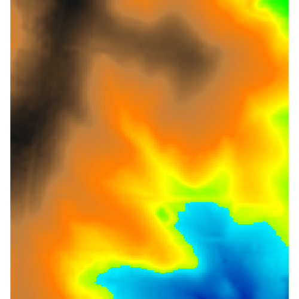
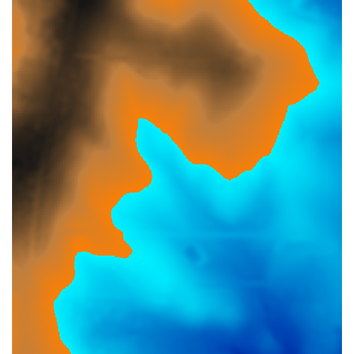
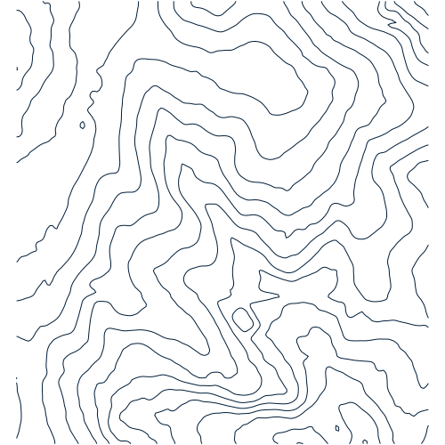
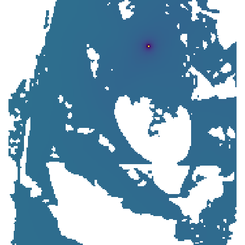
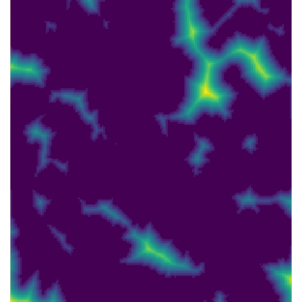
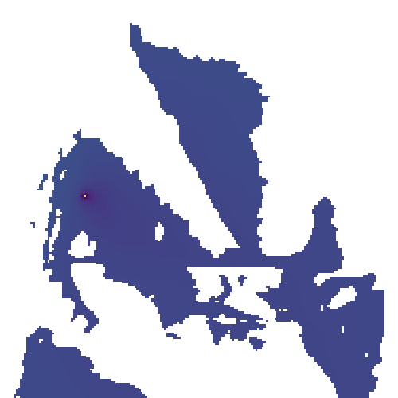

Created by asaito333.
Run flowrouting

Created by Kelly van Woesik.
Move the pins around and a flood will be created 3 m higher.

Created by Matheus.
This task simulates flooding from a lake overtopping using the r.lake module and displays the flooded areas.

Created by Keyu Wan.
Computes contour lines from resampled elevation data

Created by Jack Deppman.
Create viewshed map from input elevation raster, Future expansion will allow for point of viewshed selection by tangible landsacpe user.

Created by Evan Dadson.
Allow users to customize topography and compute distance to innundation.

Created by Jack Deppman.
Create viewshed map from input elevation raster, Future expansion will allow for point of viewshed selection by tangible landsacpe user.
Created by Rachel Layko.
Create viewsheds to analyze cultural landscape viewsheds in protected areas.
